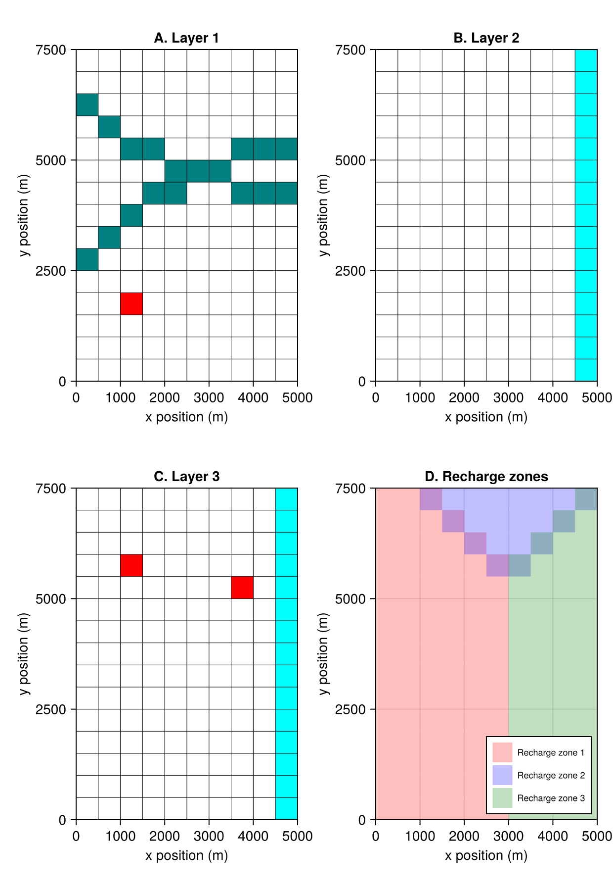
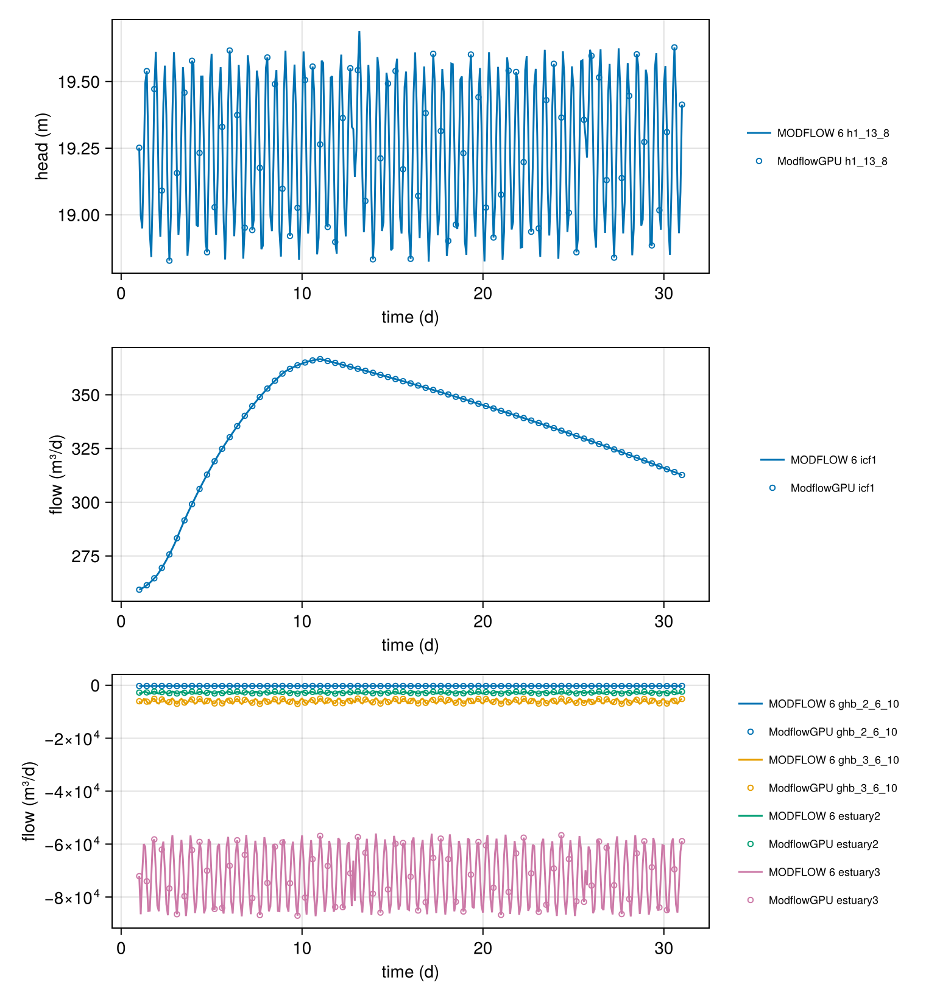
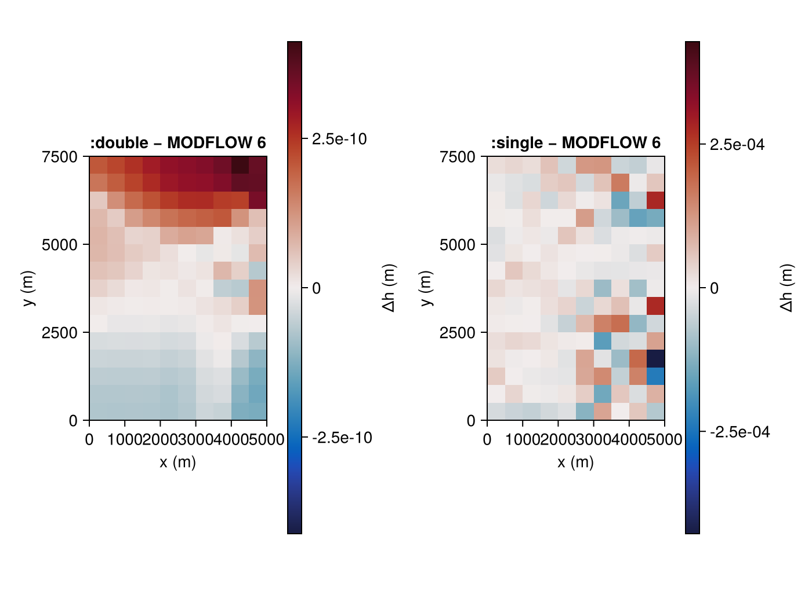

Highlands next to a tidal estuary
A transient model of highlands bordered by a tidal estuary: three layers (an upper aquifer, a confining bed and a lower aquifer) of 15 × 10 cells of 500 m. The estuary is a general-head boundary (GHB) in the last column whose stage follows the tide (a time series); two rivers cross the area, wells pump from the upper and lower aquifers, and recharge falls in three zones, each with its own time series, with evapotranspiration from the upper aquifer. A steady-state period is followed by three transient periods of 361 time steps in all. Units are metres and days.
This is the MODFLOW 6 example ex-gwf-advtidal. Its time series come from MODFLOW 6's observation (OBS) output; ModflowGPU writes the same observation files (CSV), which this page reads.
Input and the MODFLOW 6 run
ExampleTools (docs/ExampleTools.jl in the repository) takes the input from the released mf6examples.zip, sets the tight closures of the parity tests in the IMS file, and runs MODFLOW 6.8.2. With the absolute residual criterion of the tight closures MODFLOW 6 does not converge on this model, so its run uses the relative criterion (tight-relative), as the reference run of the parity tests does.
using ModflowGPU, CairoMakie
mf6 = example_run("ex-gwf-advtidal"; mode = "tight-relative")
mf6.mode, mf6.mf6_time("tight-relative", 1.070478401)The ModflowGPU run
In :double and in :single precision on the CPU, with the default options.
runs = Dict(p => run_modflowgpu(mf6.dir, p) for p in (:double, :single))
r = runs[:double].result
r.convergedtrueThe model
(A) Layer 1 with the wells (red) and the river cells (teal), (B) layer 2 and (C) layer 3 with the estuary (GHB, cyan) and, in layer 3, the wells, and (D) the three recharge zones, as in the MF6 example (which draws the zones as polygons; cells on the edge of two zones get recharge from both, with a multiplier).
g = read_dis_grid(mf6.dir)
bf = open_budget_file(r.budget_file)
wells = budget_cells(g, r.budget_file, "WEL")
river = budget_cells(g, r.budget_file, "RIV")
ghb = budget_cells(g, r.budget_file, "GHB")
rch = ModflowGPU.find_budget_records(bf; text = "RCH", kstp = 1, kper = 1)
zones = [strip(bf.records[i].paknam2) => [cell_of(g, n) for n in read_budget(bf, i).id1] for i in rch]
fig = Figure(; size = (620, 900))
panels = [
(1, 1, "A. Layer 1", [(wells, :red, 1), (river, BC_COLORS["RIV"], 1)]),
(1, 2, "B. Layer 2", [(ghb, :cyan, 2)]),
(2, 1, "C. Layer 3", [(ghb, :cyan, 3), (wells, :red, 3)]),
]
for (i, j, title, sets) in panels
local ax = Axis(fig[i, j]; aspect = DataAspect(), title, xlabel = "x position (m)", ylabel = "y position (m)")
for (cells, color, l) in sets
map_cells!(ax, g, filter(c -> c[1] == l, cells); color)
end
map_grid!(ax, g)
limits!(ax, extrema(g.xe)..., extrema(g.ye)...)
end
ax = Axis(fig[2, 2]; aspect = DataAspect(), title = "D. Recharge zones", xlabel = "x position (m)", ylabel = "y position (m)")
for ((name, cells), color) in zip(zones, (:red, :blue, :green))
map_cells!(ax, g, cells; color = (color, 0.25), label = "Recharge zone $(last(name))")
end
limits!(ax, extrema(g.xe)..., extrema(g.ye)...)
axislegend(ax; position = :rb, labelsize = 9)
save_figure(fig, "ex-gwf-advtidal-grid")
Time series
The head in layer 3, row 13, column 8; the flow between the cells in rows 5 and 6 of column 6 in layer 1; and the flows of the estuary: of the GHB cells in row 6 of layers 2 and 3, and of all GHB cells of layers 2 and 3 (the boundary names ESTUARY-L2 and ESTUARY-L3). These are the observations of the MF6 example, from MODFLOW 6's observation files (lines) and ModflowGPU's (circles, every fifth time step).
obs_names = ("ex-gwf-advtidal.obs.head.csv", "ex-gwf-advtidal.obs.flow.csv", "ex-gwf-advtidal.ghb.obs.csv")
pairs = [obs_pair(mf6.dir, runs[:double], f) for f in obs_names]
fig = Figure(; size = (760, 820))
series = [
("head (m)", ["h1_13_8"]),
("flow (m³/d)", ["icf1"]),
("flow (m³/d)", ["ghb_2_6_10", "ghb_3_6_10", "estuary2", "estuary3"]),
]
for (i, (ylabel, names)) in enumerate(series)
local ax = Axis(fig[i, 1]; xlabel = "time (d)", ylabel)
obs_plot!(ax, pairs[i], names; stride = 5)
Legend(fig[i, 2], ax; labelsize = 9, framevisible = false)
end
save_figure(fig, "ex-gwf-advtidal-obs")
The largest difference of each observation between ModflowGPU and MODFLOW 6 over all time steps:
obs_difference_table(mf6.dir, runs, obs_names; unit = "m or m³/d", flows = obs_names[2:3])| File | Observation | max |difference| (m or m³/d), :double | max |difference| (m or m³/d), :single |
|---|---|---|---|
ex-gwf-advtidal.obs.head.csv | H1_13_8 | 8.1e-11 | 1.3e-05 |
ex-gwf-advtidal.obs.flow.csv | ICF1 | 1.8e-08 | 7.9e-03 |
ex-gwf-advtidal.ghb.obs.csv | GHB_2_6_10 | 1.9e-09 | 3.9e-04 |
ex-gwf-advtidal.ghb.obs.csv | GHB_3_6_10 | 4.2e-08 | 4.1e-03 |
ex-gwf-advtidal.ghb.obs.csv | ESTUARY2 | 9.4e-09 | 3.5e-03 |
ex-gwf-advtidal.ghb.obs.csv | ESTUARY3 | 3.6e-07 | 2.9e-02 |
Comparison with MODFLOW 6
The head differences between ModflowGPU and MODFLOW 6 in layer 1 at the end of the simulation, in both precisions.
hf6 = open_head_file(only(filter(endswith(".hds"), readdir(mf6.dir; join = true))))
h6 = read_head(hf6, length(hf6))
d = [":$p − MODFLOW 6" => (hp = open_head_file(runs[p].result.head_file); read_head(hp, length(hp))) .- h6 for p in (:double, :single)]
save_figure(difference_map(g, d; unit = "m", xlabel = "x (m)", ylabel = "y (m)", size = (700, 520)), "ex-gwf-advtidal-difference")
The largest head and budget differences over all time steps, next to the values of the parity table, and the wall times (CPU: this build, including compilation for the first run of the session; GPU: the parity table, AMD Radeon RX 7800 XT). In :single the parity tests compare the budget of this model beyond the Float32 rounding of the cell flows, which the parity table shows; the table here shows the raw difference.
stats = Dict(p => (; cmp = compare_with_mf6(mf6.dir, runs[p]), runs[p].time) for p in (:double, :single))
comparison_table("ex-gwf-advtidal", stats)| Preset | max |Δh| (m), this build | max |Δh| (m), parity table | Budget, this build | Budget, parity table | CPU time, this build (s) | GPU time, parity table (s) |
|---|---|---|---|---|---|---|
:double | 4.7e-10 | 4.7e-10 | 9.1e-12 | 9.2e-12 | 13.20 | 3.25 |
:single | 6.0e-04 | 6.0e-04 | 6.9e-05 | 5.9e-07 | 13.39 | 15.24 |
Budget: the largest difference of a budget-file flow or a listing-table rate, relative to the total inflow of its time step.